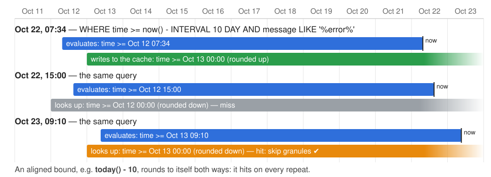
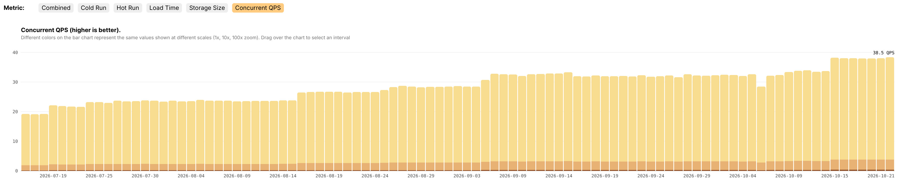
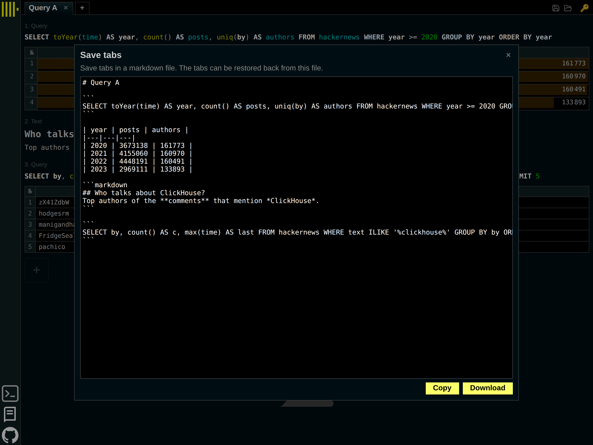

Author: Alexey Milovidov, 2026-10-22.
1. (50 min) What's new in ClickHouse 26.10.
2. (10 min) Q&A.
— 104 new features 🎃
— 225 performance optimizations 🍂
— 739 fixes 🦉
Pass a pipeline of functions where a lambda is expected:
SELECT arrayMap(lower | reverse, ['Hello', 'World']);
-- ['olleh', 'dlrow']
SELECT arrayMap(plus(_, 1) | multiply(_, 2), [1, 2, 3]);
-- [4, 6, 8]
SELECT arrayMap(_1 * 2 + 1, [1, 2, 3]); -- [3, 5, 7]
SELECT arrayMap(_1 + _2, [1, 2], [10, 20]); -- [11, 22]
— _, _1, _2 … are argument placeholders.
— Resolved during query analysis into an ordinary lambda.
Developers: Ivan Esipov, Alexey Milovidov.
Limit what a user may write, in rows instead of bytes:
CREATE QUOTA ingest_limit FOR INTERVAL 1 minute
MAX written_rows = 100000, query_inserts = 250
TO ingest;
INSERT INTO events SELECT number FROM numbers(60000); -- Ok.
INSERT INTO events SELECT number FROM numbers(60000);
-- Quota for user `ingest` for 60s has been exceeded:
-- written_rows = 120000/100000. (QUOTA_EXCEEDED)
As usual, shown in system.quota_usage, system.quota_limits.
Developer: Alexey Milovidov.
The IPCrypt specification — anonymize IP addresses, keep them IPs:
SET enable_ipcrypt = 1;
SELECT ipcryptEncrypt('192.0.2.1', unhex('2b7e151628aed2a6abf7158809cf4f3c'));
-- 1dbd:c1b9:fff1:7586:7d0b:67b4:e76e:4777 (deterministic: same IP → same output)
SELECT ip, ipcryptPrefixEncrypt(toIPv4(ip), key) AS enc, ipcryptPrefixDecrypt(enc, key) ...
-- 10.0.0.1 19.214.210.198 10.0.0.1
-- 10.0.0.2 19.214.210.197 10.0.0.2 ← the same /24
-- 10.0.1.1 19.214.211.73 10.0.1.1 ← the same /16
-- 192.168.1.1 137.62.183.100 192.168.1.1
— Prefix-preserving: aggregate by network after anonymization.
Developers: Frank Denis, Alexey Milovidov.
Turn an array into a bitmask with a lambda:
SELECT arrayPackBitsToUInt64(c -> c = 'Y', ['Y', 'N', 'N', 'Y']) AS x, bin(x);
-- 144 | 10010000
-- binary quantization of an embedding: 768 floats → 96 bytes
SELECT arrayPackBitsToFixedString(x -> x > 0, 96, embedding) AS bits,
bitHammingDistance(bits, query_bits) AS distance …
-- groups of several bits: 4-bit codes → 0x123F
SELECT hex(arrayPackBitGroupsToString(x -> x, 4, [1, 2, 3, 15]));
Six functions: arrayPackBits/arrayPackBitGroups
× ToUInt64, ToString, ToFixedString.
Developers: Eridanus, Alexey Milovidov.
RFC 2045, the encoding of e-mail bodies and headers:
SELECT encodeQuotedPrintable('Grüße aus München! = 100%');
-- Gr=C3=BC=C3=9Fe aus M=C3=BCnchen! =3D 100%
SELECT decodeQuotedPrintable(
'This is a very long line that was wrapped by the=\r\n mail client');
-- This is a very long line that was wrapped by the mail client
— Soft line breaks (= at the end of a line) are removed on decoding.
Developers: Jay Pokale, Alexey Milovidov.
Group the workload by its shape, even if the columns are shuffled:
SELECT normalizedQueryHash('SELECT a, b FROM t GROUP BY a, b')
= normalizedQueryHash('SELECT b, a FROM t GROUP BY b, a'); -- 0
SELECT normalizedQueryHashUnordered('SELECT a, b FROM t WHERE x = 1 GROUP BY a, b')
= normalizedQueryHashUnordered('SELECT b, a FROM t WHERE x = 42 GROUP BY b, a');
-- 1
SELECT normalizedQueryHashUnordered(query) AS shape, count(), sum(query_duration_ms)
FROM system.query_log GROUP BY shape ORDER BY 3 DESC LIMIT 10;
— Token hashes are summed: the order does not matter.
— Lossy on purpose: a - b and b - a are the same shape.
Developer: Yarik Briukhovetskyi.
SELECT arrayMinIndex([5, 2, 9, 2]), -- 2
arrayMaxIndex(x -> length(x), ['a', 'abc', 'ab']); -- 2
SELECT arrayRemoveAt([10, 20, 30], 2), arrayRemoveAt([10, 20, 30], -1);
-- [10, 30], [10, 20]
SELECT mapRemove(map('a', 1, 'b', 2, 'c', 3), 'b'); -- {'a':1, 'c':3}
SELECT mapEntries(map('a', 1, 'b', 2)); -- [('a',1), ('b',2)]
SELECT mapContainsKeyValue(labels, 'env', 'prod'); -- uses text indexes
-- the -Map combinator without a Map column: the key is the last argument
SELECT sumMap(value, key), argMaxMap(name, value, key) FROM t;
-- {'a':8, 'b':5}, {'a':'z', 'b':'y'}
Developers: Minh Vu, Jimmy Aguilar Mena, UnamedRus, Alexey Milovidov.
In ClickHouse, 7 / 2 was always 3.5. In PostgreSQL, it is 3.
SELECT 7 / 2, -7 / 2, 7 / 2.0;
-- 3.5 -3.5 3.5
SET sql_compatible_division_for_integers = 1;
SELECT 7 / 2, -7 / 2, 7 / 2.0;
-- 3 -3 3.5 (truncated toward zero)
SELECT 1 / 0; -- Division by zero (ILLEGAL_DIVISION)
— Works up to Int256; overflow and division by zero throw.
— Disabled by default. Stored definitions keep the semantics
they were created with.
Developer: Ilya Yatsishin.
Like clickhouse-obfuscator (since 2017), but right inside a query:
SELECT URL, Title, SearchPhrase FROM obfuscate(
SELECT URL, Title, SearchPhrase FROM hits WHERE SearchPhrase != '' LIMIT 100000)
LIMIT 2 SETTINGS obfuscate_seed = 'demo';
https://delo.ua/search/cuZ29vZ2xlLnJ1L3lhbmRleC5ydS8mcGF0aD0=#_=_
Автоюристики для Samsung сделать электростовки 2013
https://delov.ru/index.ua/adasy/foto/69363/12#f640d
Загороде мультфильм смотреть
— Keeps cardinalities, distributions, lengths, compressibility;
replaces the values. For publishing near-real data for benchmarks.
— Deterministic for a seed; not a security tool.
Developers: Nikolay Degterinsky, Alexey Milovidov.
The bound is rounded onto a time grid, so now() filters can be cached:

Example, today() - 3 over 100M rows: reads 100M → 3.2M rows on repeat.
Developer: Alexey Milovidov.
Large hash tables switch to Robin Hood hashing in place:
— max load factor 0.5 → 0.9: up to 2x smaller;
— chains ordered by the ideal position: a miss stops early;
— for GROUP BY, uniqExact, JOIN.
Example: GROUP BY with 10M keys, 1B rows, 48 threads:
26.9: 24.7 GB, 1.55 sec. 26.10: 16.3 GB, 1.28 sec.
Example: uniqExact of 100M distinct values:
26.9: 13.5 GB, 1.33 sec. 26.10: 4.6 GB, 0.31 sec.
Developer: Alexey Milovidov.
LIKE, startsWith, endsWith, position are checked
while the column is deserialized; non-matching values are not copied:
SELECT count() FROM hits WHERE URL LIKE '%google%';
Example, peak memory of this query:
before: 275 MB. 26.10: 5 MB.
— For MergeTree and for Parquet pages (plain, delta, dictionary).
— Disables itself when most of the values match.
— Setting apply_string_filters_during_scan, now enabled by default.
Developer: Alexey Milovidov.
GROUP BY k ORDER BY k LIMIT n and GROUP BY k LIMIT n keep a top-K heap. Now its boundary is sent to the table scan:
SELECT UserID, count(), any(URL) FROM hits
GROUP BY UserID ORDER BY UserID LIMIT 10;
Example: read 9.45 GB → 144 MB.
— Rows beyond the boundary are dropped before other columns are read.
— Whole granules are skipped by the primary key or a minmax index.
Developers: Alexey Milovidov, Konstantin Bogdanov.
ORDER BY column LIMIT n over Parquet files:
— rows that cannot enter the top-K are filtered inside the reader,
before the other columns are read;
— row groups are skipped by min/max; the best ones are read first.
SELECT URL, EventTime FROM file('hits.parquet') ORDER BY EventTime DESC LIMIT 10;
Example: 26.9: 0.37 sec. 26.10: 0.077 sec.
— file, url, s3, azureBlobStorage, hdfs, Iceberg, …
Developer: Alexey Milovidov.
Joining two tables on a prefix of their primary keys? The merge join
now runs as independent merge joins over key ranges, on all threads:
SELECT u.country, sum(o.amount)
FROM orders AS o JOIN users AS u ON o.user_id = u.user_id
GROUP BY u.country SETTINGS join_algorithm = 'full_sorting_merge';
-- both tables are ORDER BY user_id
Example, 200M ⋈ 50M rows:
26.9: 9.1 sec, 1.3 GB. 26.10: 0.78 sec, 256 MB. (hash join: 2.2 sec, 2.1 GB)
— query_plan_join_shard_by_pk_ranges is now enabled by default.
Developers: Nikolai Kochetov, Alexey Milovidov.
During high load, we create a narrower query pipeline,
so it doesn't always take, e.g., 96 processing lanes on a 96-core server.
— fewer partial states to merge, less memory, more throughput:

Example: 10 clients cycling over ClickBench, 96 cores:
p99 memory: 9.33 → 7.67 GiB,
CPU time per query: −15%.
Developer: Alexey Milovidov.
— LowCardinality keys are serialized straight from the dictionaries;
— repeating tuples of keys hit a cache of aggregate states.
SELECT region, os, browser, source, count(), sum(ResolutionWidth)
FROM t GROUP BY region, os, browser, source; -- all LowCardinality(String)
Example: 26.9: 0.32 sec. 26.10: 0.22 sec.
SELECT UserID, SearchPhrase, count() FROM t GROUP BY UserID, SearchPhrase LIMIT 10;
Example: 26.9: 0.077 sec. 26.10: 0.026 sec.
Developers: artemkulyk, Samuel Krempaský, Alexey Milovidov.
— Bloom filters are checked before reading the dictionary pages:
SELECT UserID FROM file('hits.parquet') WHERE UserID = …
-- reads 8 MB of dictionary pages → 4.6 KB of bloom filters (16 row groups)
— Query condition cache for ORDER BY … LIMIT over Parquet tables:
a repeated query reads only the row groups that can hold its result.
SELECT SearchPhrase FROM hits_parquet WHERE SearchPhrase != ''
ORDER BY EventTime LIMIT 10; -- repeat run: 773K → 78K rows read
— min/max without filters are taken from the column statistics.
— Top-K filtering inside the reader, lazy reading of other columns.
Developer: Alexey Milovidov.
The query cache can keep its entries in a filesystem cache:
$ cat config.d/caches.yaml
filesystem_caches:
query_results:
path: /var/lib/clickhouse/query_results_cache/
max_size: 100Gi
SELECT SearchPhrase, count() AS c FROM hits … GROUP BY SearchPhrase
SETTINGS use_query_cache = 1,
query_cache_on_disk_cache_name = 'query_results';
Example: 2.07 sec → 0.033 sec after a server restart.
— More space; survives restarts. In ClickHouse Cloud it supports distributed cache and is shared between replicas.
Developers: Alexey Milovidov, Konstantin Bogdanov.
The whole database of another cluster, by the cluster name:
CREATE DATABASE prod
ENGINE = Cluster('prod_cluster', 'default');
SHOW TABLES FROM prod;
SELECT count() FROM prod.events; -- reads all shards
INSERT INTO prod.events VALUES … -- insert to a random shard
— The named-cluster counterpart of the Remote database engine (26.9),
as cluster is to remote table function.
— Tables and their structure are fetched on demand.
— Stores no credentials: they come from the cluster configuration.
Developer: Alexey Milovidov.
A union of the tables of several databases:
CREATE DATABASE dev ENGINE = Overlay(staging, prod);
SHOW TABLES FROM dev;
-- orders ← from staging (the first one that has it)
-- users ← from prod
SHOW CREATE TABLE dev.orders;
-- CREATE TABLE dev.orders ENGINE = Alias('staging', 'orders')
— Every table is an Alias: reads and writes go to the source.
— Sources are resolved on every access: new tables appear,
a dropped table falls through to the next database.
Developers: Aly Kafoury, Alexey Milovidov.
No equality between the tables? Now it is a block nested loop join:
SELECT q, name FROM typos
LEFT JOIN products ON editDistance(q, name) <= 2;
clikhouse clickhouse
kafak kafka
mysql
postgress postgres
— 26.9: Cannot determine join keys in JOIN ON expression.
— LEFT, RIGHT, FULL — any join kind; it can spill to disk.
— As slow as a cross join; the last resort of the planner.
Developers: Vladimir Cherkasov, Alexey Milovidov.
The set for IN (subquery) can also go to disk:
SELECT count() FROM numbers_mt(200000000)
WHERE intHash64(number) IN (SELECT intHash64(number * 3) FROM numbers_mt(300000000))
SETTINGS max_memory_usage = '4G', max_bytes_before_external_set = '1G';
in memory: 12.9 GB, 19.7 sec.
with a 4 GB limit: MEMORY_LIMIT_EXCEEDED.
with spilling: 1.0 GB, 30 sec.
— A sorted run on disk, with a bloom filter and a cache of blocks.
— Disabled by default: max_bytes_before_external_set = 0.
— Workloads can spill all of them: ORDER BY, GROUP BY, IN,
DISTINCT, JOIN — under memory pressure (next slide).
Developer: Nihal Z. Miaji.
How queries inside one workload share CPU and IO:
CREATE OR REPLACE WORKLOAD all SETTINGS scheduler = 'fair';
SELECT … SETTINGS workload = 'all',
weight_lowering_cpu_seconds = 10, weight_lowering_factor = 0.1;
— fifo (as before), fair (weighted fair queueing),
las (least attained service: short queries first), priority.
CREATE WORKLOAD all
SETTINGS max_memory = '16Gi', max_memory_before_spill = '8Gi';
Example: 50 concurrent 1 GB queries succeed:
without spilling: 9%, with spilling: 100%.
Developers: Sergei Trifonov, Azat Khuzhin.
A helper CTE is evaluated once, every recursive step reads the snapshot:
WITH RECURSIVE
hubs AS MATERIALIZED (
SELECT src FROM edges GROUP BY src ORDER BY count() DESC LIMIT 100000),
reach AS (
SELECT 1::UInt32 AS v, 0 AS depth
UNION ALL
SELECT e.dst, depth + 1 FROM reach JOIN edges AS e ON e.src = reach.v
WHERE depth < 8 AND e.dst IN (SELECT src FROM hubs))
SELECT depth, count() FROM reach GROUP BY depth;
Example: without: 1.49 sec. MATERIALIZED: 0.80 sec.
— Not only faster: a non-deterministic helper (LIMIT with ties)
is the same set at every step.
Developer: Zach Naimon.
Read and write a whole SQLite database file as a format:
$ curl 'http://localhost:8123/?query=SELECT+*+FROM+t+FORMAT+SQLite' > t.sqlite
$ sqlite3 t.sqlite 'SELECT * FROM "table"'
SELECT * FROM file('t.sqlite'); -- schema inference
— A result set in one file that every tool can open.
— Works with any source and destination: files, stdin, HTTP, S3…
We already had: the SQLite database engine, the SQLite table engine,
and the sqlite table function — since 21.9 (2021) — for local database files.
Schema inference since 23.5; passing a query to SQLite as is since 26.7.
Developers: Yue Ni, Alexey Milovidov.
A subquery in FROM that refers to the tables on its left:
SET allow_experimental_lateral_join = 1;
SELECT c.CounterID, t.SearchPhrase, t.c
FROM (SELECT CounterID FROM hits
GROUP BY CounterID ORDER BY count() DESC LIMIT 3) AS c
JOIN LATERAL
(
SELECT SearchPhrase, count() AS c FROM hits
WHERE hits.CounterID = c.CounterID AND SearchPhrase != ''
GROUP BY SearchPhrase ORDER BY c DESC LIMIT 2
) AS t ON true;
— The standard "top N per group" pattern; CROSS APPLY in SQL Server.
— INNER and LEFT; evaluated once per distinct outer value.
Developers: Dimitri König, Alexey Milovidov.
Keeps deserialized columns in memory — no decompression,
no deserialization, no copying for hot data:
SET use_columns_cache = 1;
SELECT count() FROM hits WHERE URL LIKE '%google%';
Example, repeated run: 0.16 sec → 0.037 sec.
— Unlike the uncompressed cache, it stores ready columns.
— Wide MergeTree parts, and also Parquet from files and object storage.
— Sized to 10% of RAM by default; gives memory back to queries.
Developer: Alexey Milovidov.
pcodec — a codec for sequences of numbers:
SET enable_pco_codec = 1;
CREATE TABLE t (time DateTime CODEC(PCO), …)
compression ratio: ZSTD DoubleDelta PCO
EventTime (sorted hits) 1.71 2.03 3.52
UserID 5.46 6.34
Float64 sensor readings 5.64 2.48 (Gorilla) 9.61
— Decompression is fast too: 0.086 sec vs. 0.125 (ZSTD) and 0.257 (DoubleDelta).
— Links the reference Rust implementation, with runtime CPU dispatch.
Developer: Alexey Milovidov.
Train a gradient-boosted model at dictionary load, predict in SQL:
SET enable_xgboost = 1;
CREATE DICTIONARY mobile_model
(w Float64, h Float64, os Float64, ua Float64, is_mobile Float64)
PRIMARY KEY (w, h, os, ua) -- features
SOURCE(CLICKHOUSE(TABLE 'train')) -- 1M rows of hits
LAYOUT(XGBOOST(objective 'binary:logistic' max_depth 6 num_iterations 50))
LIFETIME(0);
SELECT IsMobile, avg((predictXGBoost('mobile_model', ResolutionWidth,
ResolutionHeight, OS, UserAgent) > 0.5) = IsMobile) AS accuracy
FROM hits WHERE WatchID % 100 = 1 GROUP BY IsMobile;
-- 0 0.9999
-- 1 0.9978
— Trains in 2 sec on load; SYSTEM RELOAD DICTIONARY retrains.
Developer: Matheus Nerone.
The log query language of VictoriaLogs, over ClickHouse tables:
SET enable_logsql_dialect = 1, logsql_table = 'logs';
:) /dialect logsql
(logsql) :) _time:5m error | stats by (service) count() as errors
| sort by (errors desc)
(logsql) :) "disk full" | stats by (host) count() as n, avg(duration_ms) as avg_ms
| sort by (n desc) | limit 3
(logsql) :) /dialect clickhouse
— Translated into an ordinary SELECT at parse time.
— /dialect switches the dialect in clickhouse-client and local,
even when the current dialect can't express SET.
Developer: Alexey Milovidov.
Read documents from an Elasticsearch index as a JSON column:
SET enable_elasticsearch = 1;
SELECT _index, _id, document.url, document.`@timestamp`
FROM elasticsearch('http://localhost:9200', 'hits_docs') LIMIT 2;
CREATE TABLE es_hits ENGINE = Elasticsearch('http://localhost:9200', 'hits_docs');
SELECT count() FROM elasticsearch('http://localhost:9200', 'hits_docs',
query = '{"term": {"is_mobile": "1"}}'); -- filtered by Elasticsearch
— A consistent snapshot: paged with a point in time; Elasticsearch 7.12+.
— Basic auth, bearer tokens, API keys, named collections. Read-only.
Developer: Kirill Kopnev.
s3_plain_rewritable keeps all metadata in the bucket —
but mutations and ALTERs were not supported. Now they are:
$ cat config.d/disks.yaml
storage_configuration:
disks:
s3_plain_rewritable:
type: s3_plain_rewritable
endpoint: https://s3.eu-west-1.amazonaws.com/bucket/data/
enable_hard_links: 1
— A mutated part refers to the unchanged files of the old one.
— Off by default: older servers can't read a disk with hard links.
Developers: yanglongwei, Alexey Milovidov.
Loading a disk with 36 thousand directories, 500K objects:
before: 116 sec. 26.10: 37 sec.
— Listings are split by key prefix and run in parallel;
— files of all directories come from a few listings of the whole disk;
— per-path locks: one long DROP TABLE no longer blocks
every insert and merge on the same disk;
— removing a part is one batched delete, without copies.
Developer: Alexey Milovidov.
The VARIANT type of Spark 4.0, Parquet, and Iceberg v3 — read as Dynamic:
SELECT n, dynamicType(v), v FROM file('variant.parquet');
1 JSON {"a":1,"b":{"c":"x","d":{"e":true}}}
2 JSON {"f":[1,"s"]}
3 Array(JSON) ['{"k":1}','{"k":2,"m":"z"}']
7 Int64 42
— 26.9: Tuple(metadata String, value String) — two binary blobs.
— Objects become JSON; read the column as JSON if all values are objects.
— The same for the variant type in Iceberg tables.
— Shredded variants: not yet.
Developer: Konstantin Vedernikov.
ClickHouse server can be an Iceberg REST catalog:
$ cat config.d/iceberg_catalog.yaml
iceberg_rest_catalog:
port: 8182
warehouse: my_warehouse
base_location: s3://warehouse/my_warehouse
storage_named_collection: warehouse_storage
$ curl -u default: -X POST -d '{"namespace":["analytics"]}' \
http://localhost:8182/v1/my_warehouse/namespaces
CREATE DATABASE lake ENGINE = DataLakeCatalog('http://localhost:8182/v1', …)
SETTINGS catalog_type = 'rest', warehouse = 'my_warehouse', …
— Namespaces and tables: create, list, load, drop; state in Keeper.
Developer: Asya Shneerson.
A new implementation of the unity catalog type:
both table formats from a single Unity Catalog.
CREATE DATABASE unity
ENGINE = DataLakeCatalog(
'https://<workspace-id>.cloud.databricks.com/api/2.1/unity-catalog')
SETTINGS catalog_type = 'unity', warehouse = 'main',
catalog_credential = '<token>', use_unity_catalog_v2 = 1;
SHOW TABLES FROM unity; -- Delta Lake and Iceberg tables
— Switch: ALTER DATABASE … MODIFY SETTING use_unity_catalog_v2 = 1.
Developers: Asya Shneerson, Melvyn Peignon.
Iceberg v3 stores deleted rows as roaring bitmaps in Puffin files.
Now ClickHouse applies them when reading:
SELECT count() FROM iceberg('s3://…/table_v3/');
-- rows deleted by Spark are not returned
-- inspect a deletion vector (Puffin format, since 26.8):
SELECT referenced_data_file, deleted_rows FROM file('dv.puffin', Puffin);
-- …/data/00000-0-15387e93-…-00001.parquet [2,5,7,100,65536]
— In v2, deletes were position delete files (Parquet);
v3 deletion vectors are smaller and are merged per data file.
Developers: linjiayu, Asya Shneerson.
SET enable_trino_dialect = 1, dialect = 'trino';
SELECT date_trunc('day', EventTime) AS d, count(*), approx_distinct(UserID)
FROM hits WHERE regexp_like(URL, 'google') GROUP BY 1 ORDER BY 1 LIMIT 3;
SET allow_experimental_kusto_dialect = 1, dialect = 'kusto';
hits
| where SearchPhrase != ''
| summarize c = count(), u = dcount(UserID) by SearchPhrase
| top 3 by c desc
— Both were reimplemented in 26.9; now they are Beta.
— The setting names are still the same.
Developer: Alexey Milovidov.
No dialect switch needed:
SELECT TRY_CAST('abc' AS INTEGER), TRY_CAST('42' AS INTEGER);
-- NULL, 42
SELECT ARRAY[1, 2, 3] AS a, slice(a, 2, 2); -- [1,2,3], [2,3]
SELECT CAST(x AS ARRAY(INTEGER)), CAST(m AS MAP(VARCHAR, BIGINT));
SELECT starts_with(s, 'click'), regexp_like(s, '[0-9]+'), day_of_week(d),
url_extract_host(url), bitwise_and(a, b), arbitrary(x), bool_and(y);
— Queries written for Trino, Presto, Athena run with fewer changes.
Developer: Alexey Milovidov.
Any tabular text — figure out the columns automatically:
SELECT c0 AS ip, c5 AS request, c6 AS status, c7 AS bytes
FROM file('access.log', Freeform);
93.184.216.34 GET /index.html HTTP/1.1 200 5123
10.0.0.15 POST /api/v1/query HTTP/1.1 500 87
172.16.4.2 GET /favicon.ico HTTP/1.1 404 0
— Tries delimiters, quoting, and types; picks the most consistent structure.
— Logs, df, ls -l, copy-pasted tables…
— The PR was opened in 2022 — and finally merged!
Developers: Tri Dao, Alexey Milovidov.
chdig — the top-like TUI for ClickHouse, built into the binary:
$ clickhouse chdig
New in v26.10.1:
— ZooKeeper browser;
— per-host summary for clusters;
— better filters.
Demo.
Developer: Azat Khuzhin.
psql just works:
$ psql -h localhost -p 9005 -U pg default
default=> \dt
Schema | Name | Type | Owner
---------+--------+-------+-------
default | hits | table | pg …
default=> SELECT format_type(1043, 68), current_setting('server_version');
character varying | 26.10.1.1
default=> SELECT sleepEachRow(1) FROM numbers(30);
^CCancel request sent
ERROR: Query was cancelled ← cancellation never worked before
— postgresql table function can connect to another ClickHouse.
— COPY … WITH (FORMAT csv); comment-only pings from pgx.
Developer: Alexey Milovidov.
Tail log files into ClickHouse — now friendly to logrotate:
CREATE TABLE app_logs (level String, msg String)
ENGINE = FileLog('/var/lib/clickhouse/user_files/app/*.log', 'JSONEachRow');
-- reads app.log, skips app.log.1, app.log.2.gz;
-- a file renamed by rotation is read to the end
SYSTEM RESET FILELOG app_logs; -- all files again
SYSTEM RESET FILELOG app_logs FILE 'app.log' OFFSET 27;
SYSTEM RESET FILELOG app_logs FILE 'app.log' TO END; -- only new data
— Globs: *, ?, {a,b}, {N..M} in the file name.
— Re-read without recreating the table; privilege SYSTEM RESET FILELOG.
Developers: Groene AI, Alexey Milovidov.
ClickHouse as a Prometheus: TimeSeries engine + PromQL.
— 100% on the basic compatibility tests
(the Prometheus compliance suite of queries);
— 90%+ on the extended tests
(Prometheus' own promqltest test files).
New: stddev_over_time, mad_over_time, first_over_time, timestamp,
min_of, max_of, step, range; stale markers; Prometheus 3.5 semantics.
Developers: Vitaly Baranov, Valery Petrov, Minh Vu, James Cunningham.
After a query has run, the [+] button adds more cells:
queries with their own results, or Markdown text.
— Run, reorder, insert, and delete cells individually;
— inactive editors collapse to one line; results scroll inside;
— the notebook is restored on reload;
— a tab with one cell looks exactly as before.
In the style of Jupyter and Observable — in a single HTML file
served by every ClickHouse server at /play.
Demo.
Developer: Alexey Milovidov.

— Save all tabs, queries, and parameters
as a Markdown file; load them back.
— The Format button:
select by, count() c, max(time) from hackernews
where text ilike '%clickhouse%' and type = 'comment'
group by by having c > 10 order by c desc limit 10
↓
SELECT
by,
count() AS c,
max(time)
FROM hackernews
WHERE (text ILIKE '%clickhouse%') AND (type = 'comment')
GROUP BY by
HAVING c > 10
ORDER BY c DESC
LIMIT 10
Developer: Alexey Milovidov.
— 🇮🇪 Dublin: Training, Oct 23
— 🇵🇱 Krakow: Training, Nov 3 · AI Builders and Databases, Nov 4
— 🇺🇸 New York: AI Builders Night, Nov 3
— 🇪🇸 Madrid: AI Builders and Databases, Nov 3
— 🇺🇸 Brooklyn: LibreChat Meetup, Nov 5
— 🇦🇺 Melbourne: The Agentic Data Stack, Nov 5
— 🇺🇸 Salt Lake City: ClickStack Training at KubeCon, Nov 9
— 🇺🇸 San Francisco: AI Builders Night, Nov 9
— 🇦🇺 Sydney, Nov 10 · 🇦🇺 Brisbane, Nov 11: The Agentic Data Stack
— 🇮🇳 Bengaluru: The Agentic Data Stack, Nov 12
— 🇳🇿 Auckland, Nov 17 · 🇳🇿 Wellington, Nov 18: The Agentic Data Stack
— 🇺🇸 San Francisco, Nov 17 · 🇨🇦 Toronto, Nov 18: Data Engineering
— 🇫🇷 Paris: Training, Nov 25 · 🇨🇾 Limassol, Nov 26
— ClickHouse writes Iceberg tables to Microsoft OneLake
— ClickHouse Workload for Microsoft Fabric
— Executable UDFs are GA in ClickHouse Cloud
— JWT authentication and SCIM provisioning
— A native TCP client for .NET
— ClickStack: built-in anomaly detection for alerts
— The Agentic Analytics Benchmark, round two
— Chasing that 32 ms tail latency
— Postgres on NVMe; Managed Postgres migrations